비서-1급 (2017-11-12 기출문제)
1과목: 비서실무
1. 다음 중 김혜진 과장의 비서로서의 업무 특성을 가장 잘 설명한 것은?
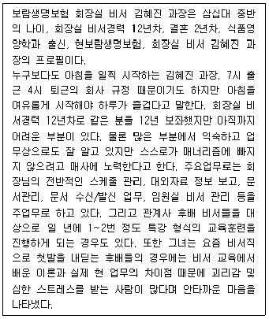
- 업무 내용의 가변성
- 상사에의 예속성
- 다양한 업무
- 취업 분야의 다양성
(정답률: 62%)

2. 한가을 비서는 원인터내셔널 비서실에서 부사장 비서로 일하고 있다. 원인터내셔널의 인사정책은 비서 입사시 계약직으로 2년을 근무한 후에 평가를 받아 정규직으로 전환하고 있다. 그런데 한가을 비서는 연말 인사고과 후에 정규직으로 전환은 되었으나 마케팅부서의 사무직으로 소속과 포지션이 전환되어 발령이 났다. 원인 터내셔널은 근로조건이 매우 좋지만 비서를 위한 별도의 직급체계가 마련되어 있지 않아 2년 계약직으로만 비서를 고용하고 있다. 그래서 2년 계약기간이 끝난 한가을 비서는 정규직으로 전환되어 다른 부서로 발령이 난 것이다. 그러나 한가을 비서는 비서직으로 계속 근무하기를 희망하는 상황이다. 이 때 한비서가 자신의 경력관리를 위해 취할 수 있는 행동으로 가장 적절한 것은?
- 기회를 보아 상사에게 조심스럽게 비서직에 직급체계를 마련하여 운영하고 있는 다른 회사의 사례를 말씀드려 본다.
- 상사에게 자신의 인사고과가 좋을 뿐만 아니라 비서직무를 잘 수행하고 있음을 어필한 후 비서실에서 계속 근무할 수 있도록 회사 인사 규정을 수정해 줄 것을 요청한다.
- 승진을 위해 기회가 있을 때마다 인사부장과 팀원들에게 비서실로 이동하고 싶다는 것을 이야기한다.
- 한가을 씨는 전문비서를 희망하므로 원인터내셔널에서 경력 개발을 할 수 없다면 퇴사하고 구직활동을 다시 시작한다.
(정답률: 52%)
3. 상사 부재 시 전화응대에 대한 설명으로 적절하지 않은 것은?
- 상사의 부재 이유를 부정적으로 응답하지 않도록 한다.
- 상사가 어디로 외출했는지 혹은 어디로 출장 갔는지 집요하게 묻는 경우에는 비서가 아는 한도에서 친절하게 설명해 드리는 것이 좋다.
- 예의 바르게 응대하다 과잉 친절이 되어 기밀 정보를 알려주는 일이 없도록 주의한다. 예를 들면 어디에 계신지 자세히 말하는 것보다 “방금 자리를 비우셨습니다.” 또는 “외출 중이십니다.” 라고 한다.
- 상사 부재 시에는 상사의 책상에 전화응대 메모를 갖다 놓는다. 그리고 상사가 들어오면 메모 내용을 간단하게 말씀드리고 메모를 보았는지 확인한다.
(정답률: 81%)
4. 다음은 대기업의 계열사인 택배회사의 사장님 비서로 근무 중인 고소영씨가 전화를 받고 있는 장면이다. 내용 중 비서가 해야 하는 전화응대 방법으로 옳지 않은 구문이나 행동, 대처방법이 있으면모두 고르시오.
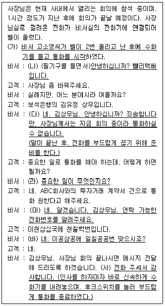
- (가), (나), (다)
- (가), (다), (마)
- (나), (라), (사)
- (다), (라), (사)
(정답률: 49%)
5. 조이롬 비서는 상사를 찾아온 손님과 다음과 같은 대화를 나누었다. 비서가 올바르게 내방객을 응대한 부분을 고르시오.
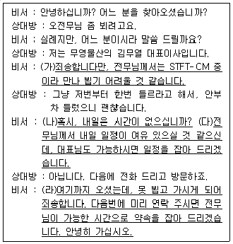
- (가), (라)
- (나), (다)
- (다), (라)
- 없음
(정답률: 48%)
6. 영은수씨는 가나상사에 대표이사 비서로 입사한 신입사원이다. 다음의 상황에서 영은수 비서가 취할 수 있는 행동으로 가장 적절한 것은?
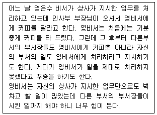
- 상사에게 자신의 상황을 말씀드리고 자신의 애로사항에 대해 상사의 의견을 구한다.
- 부서장들에게 대표이사 보좌에 집중해야하므로 비서업무 외업무와 커피 요청은 해드릴 수 없다고 분명하고 솔직하게 말한다.
- 상급자인 부서장들의 요청에 마지못해 커피를 타 드리지만, 다시 요청하지 않도록 커피를 아주 맛없게 타서 드린다.
- 타 부서 부서장들이 대표이사를 만나러 올 때가 되면 잠시자리를 비우는 등 가능한 마주치지 않도록 한다.
(정답률: 54%)
7. 다음 중 직장 내 대인관계에 대한 설명으로 가장 적절한 것으로만 짝지어진 내용을 고르시오.
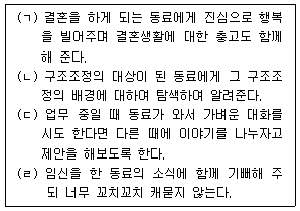
- (ㄱ), (ㄴ)
- (ㄴ), (ㄷ)
- (ㄷ), (ㄹ)
- (ㄹ), (ㄱ)
(정답률: 76%)
8. 다음의 비서가 예약업무를 처리하는 방법에 대한 설명으로 가장 적절하지 않은 것은?
- 인터넷 사이트를 통해 예약 시에는 인터넷 오류로 인해 예약이 진행되었다가 취소되는 경우가 있으므로 반드시 예약성공 여부를 재확인하고 있다.
- 인터넷 사이트를 통해 예약 시에는 예약 진행과 동시에 결제가 진행되는 경우가 대부분이므로 결제 정보를 미리준비하고, 티켓이나 예약 확인서를 프린터로 바로 출력하여 상사에게 보고하고 있다.
- 정보가 많거나 복잡한 경우에는 전화를 이용해서 구두로 예약을 하고 있다. 예약 내용을 구두로 확인하므로 정확성을 기할 수 있다.
- 담당자와 직접 전화 통화하여 예약을 하면 실시간으로 정보확인이 가능하지만 예약이 정확하게 진행되었는지 확인하기 위해 예약확인서를 받아 두고 있다.
(정답률: 78%)
9. 항공 예약 시 알아야 할 항공 용어에 대한 설명으로 바르지 않은 것은?
- 오픈티켓 (Open Ticket) : 일정이 확정되지 않아 돌아오는 날짜를 정확히 지정하기 어려운 경우, 돌아오는 날짜를 임의로 정하여 예약하고, 항공권의 유효 기간 내에서 일정 변경이 가능한 항공권
- 초과 예약 (Overbooking) : 항공편은 판매하지 못한 좌석에 대해 재판매가 불가능하므로 예약이 취소되는 경우와 예약 손님이 공항에 나타나지 않는 경우에 대비하여 실제 판매 가능 좌석 수보다 예약을 초과해서 접수하는 것
- 경유 (Transit) : 비행기가 출발지에서 출발 후 목적지가 아닌 중간 기착지에 내려서 기내식 준비, 청소, 연료 보급, 승객 추가 탑승 등의 이유로 1∼2시간 정도 대기 후 동일한비행기에 다시 탑승하는 것
- 환승 (Transfer) : 여정 상 두 지점 사이에 잠시 체류하는 것으로 24시간 이상 체류 시에는 해당 국가 입국 심사를 마치고 위탁 수하물을 수령하여 세관 검사까지 마쳐야하는 것
(정답률: 59%)
10. 회의를 개최하는 경우에 회의 시작 전과 회의 중, 회의 종료 후 할 수 있는 비서의 업무를 설명한 것으로 가장 적절하지 않은 것은 무엇인가?
- 회의 시작 전에 회의에 필요한 자료를 준비하는데, 과거 회의록이나 의제에 관련된 자료를 준비할 수 있다. 또한, 회의 일정표나 좌석 배치도 및 참석자 프로필, 발표문과 연설문 등의 자료가 준비되어야 할 경우가 있다.
- 회의 식음료는 회의 전에 계획되어, 필요에 따라 회의 중 공급될 수 있도록 준비한다. 일반적으로는 음료수와 다과가 준비될 수 있는데, 리셉션(reception) 형태의 회의에서는 주류 혹은 핑거 푸드(finger food)가 추가되기도 한다.
- 회의 시나리오는 시간 단위로 회의가 어떻게 진행되는지를 작성한 것으로 필요에 따라서 회의 중에 작성되기도 한다.
- 회의 중에 회의 참석자에게 긴급한 연락이 있을 때는 해당 메모를 작성하여 전달할 수 있도록 준비하고, 필요에 따라 전화를 연결해 줄 수 있어야 한다.
(정답률: 66%)
11. 다음 초청장의 내용과 일치하지 않는 것은?
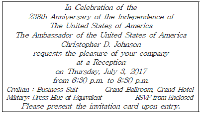
- 행사 후 만찬이 준비되며 상사의 좌석이 지정되어 있다.
- 입장할 때 반드시 초청장을 보여주어야 하므로 상사가 초청장을 소지하고 참석하도록 보좌한다.
- 군인은 제복을 입으면 된다.
- 참석 여부는 동봉된 참석 회신카드에 작성해서 보내야 한다.
(정답률: 59%)
12. 행사 의전 원칙에 대한 설명으로 적절하지 않은 것은?
- 의전 원칙은 상대에 대한 존중(respect), 문화의 반영(reflecting culture), 상호주의(reciprocity), 서열(rank), 오른쪽(right)이 상석이라는 것이다.
- 행사 참석 인사에 대한 예우 기준은 행사의 성격, 행사에서의 역할과 당해 행사와의 관련성 등을 고려하여 결정된다.
- 단상 좌석 배치는 행사에 참석한 최상위자를 중심으로 하고 최상위자가 부인을 동반하였을 때에는 단 위에서 아래를 향하여 중앙에서 좌측에 최상위자를, 우측에 부인을 각각 배치한다.
- 단하 좌석 배치는 분야별로 좌석군을 정하는 것이 무난하며, 당 행사와의 관련성이 높은 사람들 순으로 단상에서 가까운 좌석에 배치한다.
(정답률: 63%)
13. 테이블 매너에 대한 설명으로 적절하지 않은 것은?
- 중앙의 접시를 중심으로 나이프와 포크는 각각 오른쪽과 왼쪽에 놓이게 된다. 따라서 나이프는 오른손으로, 포크는 왼손으로 잡으면 된다.
- 사용 중일 때는 포크와 나이프를 접시 오른쪽에 평행하게 나란히 두며, 식사가 끝났을 때는 포크와 나이프가 팔(八)자로 접시 위에서 서로 교차하도록 놓는다.
- 식사 중에 대화를 나누다가 포크와 나이프를 상대방을 향해 바로 세워 든 채 팔꿈치를 식탁에 놓고 말을 하는 것은 대단한 실례이다.
- 나이프는 사용 후 반드시 칼날이 접시 안쪽으로 향하도록 한 후 포크와 가지런히 놓는다.
(정답률: 66%)
14. 다음 중 비서실 비품을 점검하기 위한 순서가 바르게 나열된 것은?
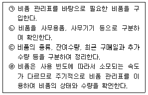
- ㉠ - ㉡ - ㉢ - ㉣
- ㉠ - ㉢ - ㉡ - ㉣
- ㉢ - ㉡ - ㉣ - ㉠
- ㉡ - ㉢ - ㉣ - ㉠
(정답률: 57%)
15. 아래 전화메모를 보고 송선미 비서가 후배 황하나에게 업무 내용을 확인, 질문한 표현으로 가장 적절한 것을 고르시오.
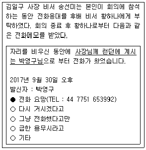
- “황하나, 박영구씨 소속회사가 어디에요?”
- “하나야, 박영구님이 추가적으로 남긴 말은 없니?”
- “황하나씨, 박영구님의 소속을 함께 표기하면 좋을 것 같아요.”
- “하나씨, 박영구님이 추가적으로 남기신 말씀도 기재해 주시면 고맙겠습니다.”
(정답률: 71%)
16. 김영숙 비서는 갑작스러운 사고로 1주일간 출근하지 못했다. 김 비서의 일을 도와주는 다른 직원도 없는 상황이어서 1주일만에 사무실에 출근해 보니 밀린 일들이 산더미처럼 쌓여 있었다. ‘갑작스러운 사고나 질병 및 퇴사 등의 이유로 자리를 비우게 되는 경우에 대비해서 조직구성원은 자신의 업무매뉴얼을 작성해 두어야 한다.’라는 것이 생각이 났다. 김 비서는 자신의 업무 매뉴얼을 지금 당장 만들기로 결심했다. 김비서가 업무매뉴얼을 만드는 방식으로 적절하지 않은 것은?
- 김비서가 수행하는 업무의 종류를 구분하여 목차와 세부사항을 먼저 작성하였다.
- 김비서가 수행하는 업무를 종류별로 구분한 후 업무 수행순서를 도해화하여 정리하였다.
- 업무 수행과 관련하여 필요한 주관적인 의견도 함께 명시하였다.
- 업무 내용은 가능한 간단하게 정리함으로써 다른 비서들이 김비서의 업무를 대행할 때 도움이 되도록 하였다.
(정답률: 42%)
17. 다음 중 비서의 상사 신상정보관리 업무 수행 자세로 적절하지 않은 것은?
- 상사에 관한 신상정보는 예전 기록이나 예약 관련 서류 등을 통해 파악할 수 있는데, 출장관련 서류를 통해 여권 정보, 비자 및 항공사 마일리지 정보 등을 알 수 있다.
- 상사의 신상카드를 작성할 때 상사의 건강과 관련된 정보를 수집하여 정리하고, 식사 예약이나 간식 준비 시 참고한다.
- 상사의 이력 사항은 업무에 참고할 뿐만 아니라 대내·외적인 필요에 의해 공개하거나 제출할 경우가 있는데, 이런 경우 비서는 상사의 이력서 내용을 외부에 공개하고 추후 상사에게 보고해야 한다.
- 상사신상카드에는 상사의 사번, 주민등록번호, 운전면허증, 신용카드번호와 각각의 만기일, 여권번호, 비자 만기일, 가족사항, 은행 계좌번호 같은 내용을 정리하며 기밀 유지를 위해 암호화하여 보관한다.
(정답률: 81%)
18. 미래연구소의 강철수 소장은 ‘2017 제1차 연구윤리 포럼’에 기조강연을 요청받았다. 비서인 김비서는 초청장을 이메일로 받고 일정표를 다시 확인하는 과정에서 포럼 측과 협의했던 날짜와 포럼 초청장의 개최일시가 다르다는 사실을 뒤늦게 알게 되었다. 포럼일자가 일주일 밖에 남지 않았는데, 상사 기조 강연 시간에 중요한 임원회의 일정이 수립되어 있다. 이 때 김비서가 일정을 보고하고 조율하는 방법으로 가장 바람직한 것은?
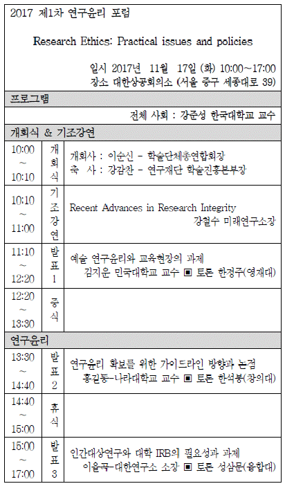
- 11월 17일 오전에 일정이 중복되었음을 보고하고 두 일정 모두 중요한 일정이므로 상사의 선택에 따른다.
- 기조강연과 임원회의 중 우선순위가 어떤 것인지 비서가 먼저 판단한 후 상사에게 선약되어 있는 임원회의에 참석하실 것을 권유한다.
- 포럼 측에서 알려준 날짜는 11월 16일이었다는 것을 증명할 수 있는 이메일을 찾아 포럼 측에 알려주고 일정상 상사가 참여할 수 없음을 알린다.
- 임원회의는 사내회의이므로 조정이 가능하므로 임원회의 일자를 미루고 대외활동인 포럼에 참석하여 기조강연을 하는 것이 우선순위에 적합하다는 의견을 상사에게 말씀드린다.
(정답률: 58%)
19. 비서의 보고 업무 자세로 적절하지 않은 것은?
- 상사가 지시한 내용을 이행하는 중에 상황이 변경되었을 때, 처리 기간이 오래 소요될 때, 실수를 범했을 때, 상사가 지시한 범위를 벗어날 때, 상사가 지시한 방침이나 방법으로는 원활한 수행이 불가능할 때는 미루지 말고 즉시 중간보고를 해야 한다.
- 비서가 2인 이상의 상사를 모시는 경우 비서는 긴급도와 중요도에 따라서 우선순위를 정하여 지시 내용을 이행하며, 직속 상사 이외의 내·외부 고객으로부터 지시를 받은 경우 반드시 직속 상사에게 보고해야 한다.
- 상사가 궁금해 하는 것을 먼저 보고해야 하는데, 이는 상사 입장에서 나에게 질문을 해 봄으로써 파악이 가능하다.
- 보고할 때는 서론, 본론, 결론의 순서대로 체계적이고 논리적으로 말한다.
(정답률: 63%)
20. 다음의 내방객 응대업무에 대한 비서의 업무수행방식에서 적절하지 않은 것은?
- 면담이 예정된 시간보다 길어지거나 다음 일정이 잡혀 있는 경우에는 상사가 적절한 시간에 면담을 마칠 수 있도록 다음 일정을 상사에게 메모로 전해 준다.
- 여러 사람이 회의를 하고 있는데 그중 한 사람에게 급한 전화가 온 경우에는 회의 중이므로 통화가 불가능하다고 하고 회의가 끝난 후 내용을 전달한다.
- 내방객이 운전기사가 있는 승용차로 온 경우 주차장에 연락하여 내방객의 승용차를 정문 입구에 대기시키도록 한다. 승용차 번호, 운전자 이름 등을 내방객의 비서에게 미리 확인하여 내방객 기록 카드에 적어 놓도록 한다.
- 내방객 카드에는 인적 사항뿐 아니라 내방객의 인상착의나 특징, 기호 등을 적어 두는데, 내방객 카드가 없는 경우에는 명함 뒷면에 필요한 내용을 간단히 적어 내방객 카드 대용으로 사용할 수도 있다.
(정답률: 71%)
2과목: 경영일반
21. 다음은 기업윤리에 대한 설명이다. 이 중 가장 거리가 먼 것은 무엇인가?
- 기업윤리의 초점은 기업의 운영환경 내에서 발생하는 올바르거나 잘못된 행동과 관련된다.
- 기업의 윤리적인 의사결정을 위해 가장 우선적으로 고려해야 하는 부분은 주주의 최대수익이다.
- 기업의 의사결정이 미치는 영향은 간혹 소비자의 이상적인 생각과 마찰을 일으킬 수 있기에 의사결정에 신중을 기할 필요가 있다.
- 미국의 존슨 앤 존슨사의 경영윤리에 대한 신조(creed)는 기업을 경영하는데 있어 시사하는 바가 크다.
(정답률: 81%)
22. 다음 중 경영환경에 관한 설명으로 가장 옳지 않은 것은?
- 과업환경은 고객, 공급자, 경쟁자, 노동조합 등을 말한다.
- 자연적 환경은 출생률, 사망률, 고령의 증가, 교통의 변화등을 말한다.
- 경제적 환경은 국제수지, 경제성장률, 1인당 GDP, 소비구조의 변화 등을 말한다.
- 기술적 환경은 제조공정, 원재료, 제품, 정보기술 등을 말한다.
(정답률: 49%)
23. 다음의 경영환경에 관한 설명을 읽고, 괄호에 들어갈 내용이 올바르게 연결된 것은 무엇인가?
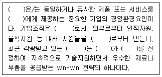
- 기업, 소비자, 서비스체제, 공급자, 공급사슬관리, 공급자, 소비자
- 기업, 소비자, 서비스체제, 공급자, 공급사슬관리, 수요자, 공급자
- 경쟁자, 소비자, 개방체제, 공급자, 공급사슬관리, 공급자, 소비자
- 경쟁자, 소비자, 개방체제, 공급자, 공급사슬관리, 수요자, 공급자
(정답률: 51%)
24. 다음의 괄호에 들어갈 가장 적당한 용어로 구성된 것은 무엇인가?
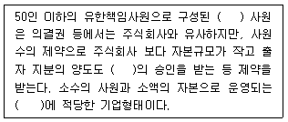
- 합자회사 - 사원총회 - 중소기업
- 합자회사 - 이사회 - 중소기업
- 유한회사 - 사원총회 - 중소기업
- 유한회사 - 이사회 - 중소기업
(정답률: 47%)
25. 다음의 괄호는 무엇을 설명하고 있는지 가장 적합한 것은 무엇 인가?
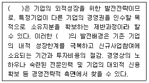
- 인수합병
- 집중매입
- 자회사전략
- 다국적기업
(정답률: 76%)
26. 다음 중 주식회사에 대한 설명으로 가장 적절하지 않은 것은?
- 주식의 증권화제도를 택하고 있다.
- 주식회사는 어디까지나 회사의 일종이기 때문에 사단법인이며 영리를 목적으로 한다.
- 이사회는 회사의 업무집행에 대해 주주가 의사표시를 하는 최고의사결정기관이다.
- 주주는 회사의 자본위험에 대한 유한책임을 진다.
(정답률: 57%)
27. 다음은 기업집중에 대한 설명으로, 괄호에 적합한 용어를 순서대로 열거하면 무엇인가?
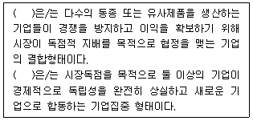
- 트러스트 - 카르텔
- 카르텔 - 트러스트
- 콘체른 - 트러스트
- 트러스트 - 콘체른
(정답률: 63%)
28. 다음의 설명 중 지식경영과 가장 거리가 먼 내용은 무엇인가?
- 현대사회는 지식 및 정보가 경영의 핵심자원이기에 지식의 활용이 기업생존여부에 큰 영향을 미친다.
- 기업환경의 변화속도가 빨라짐에 따라 새로운 지식을 생산하고 그것을 활용/공유하는 것이 중요한 요소가 된다.
- 기업에서는 개인 및 조직이 지닌 지적자산을 체계적으로 발굴하여 조직의 공통지식을 공유해야 한다.
- 조직 내의 지식이 더 잘 공유될 수 있도록 조직구조를 집권화해야 한다.
(정답률: 73%)
29. 다음 중 기업가정신(entrepreneurship)의 핵심요소로서 가장 적절하지 않은 것은?
- 창의성과 혁신
- 안전성과 보수주의
- 도전정신과 가치창출
- 창업자적 전문경영자 정신
(정답률: 73%)
30. 다음 중 경영의사결정에 대한 설명으로 가장 적절하지 않은 것은?
- 현실적으로 대부분의 기업에서는 집단에 의한 의사결정보다 개인에 의한 의사결정방법을 더 많이 사용하지만, 집단의사 결정은 시간이 절약된다는 장점이 있다.
- 경영자는 조직 내에서 의사결정을 수행하는 역할을 하고 있다.
- 의사결정의 중요도와 내용을 대상으로 하여 전략적 의사결정, 관리적 의사결정, 일상적 의사결정으로 나눌 수 있다.
- 의사결정이란 기업의 경영활동에서 나타나는 문제를 발견, 인식, 해결하는 일련의 과정을 말한다.
(정답률: 70%)
31. 다음의 조직문화에 대한 설명 중 가장 적절한 것은?
- 조직문화란 조직의 구성원들의 행동을 만들고 인도하는 무정형의 개념이나, 기업의 성과달성에는 영향을 미치지 않는다.
- 조직문화는 조직구성원이 부딪히는 문제를 정의하고 분석함으로써 해결방법을 제시하지만, 조직을 결속하는 데는 오히려 어려움이 있다.
- 사회화란 새로운 구성원이 조직의 가치, 규범, 문화를 배우며, 기존 구성원이 공유하는 행위와 태도를 배우는 과정이라고 할 수 있다.
- 조직문화는 시간의 경과에 따라 형성되며, 한번 형성되면 고정적으로 바뀌지 않는다.
(정답률: 69%)
32. 일부 기업에서는 근로자가 일정 연령에 도달한 시점부터 임금을 삭감하는 대신 근로자의 고용을 보장해 주는 제도를 시행하고 있다. 이를 나타내는 용어로 가장 적합한 것은?
- 갠트임금제
- 임금피크제
- 유연근무시간제
- 포괄임금제
(정답률: 74%)
33. 다음 중 인사고과의 방법에 관한 설명으로 가장 적절하지 않은 것은?
- 행위기준평정법(BARS)은 피평가자간의 상대적 서열로 평가하는 방법이다.
- 평정척도법(ranking scales)은 단계식 평정척도법, 도식평정척도법 등이 있다.
- 대조리스트법(checklist)은 직무상 행동을 구체적으로 표현하여 피평가자를 평가하는 방법이다.
- 순위법(ranking)은 피평가자에게 순위번호를 붙여 주관적으로 평가하는 방법이다.
(정답률: 36%)
34. 다음의 빅데이터(big data)에 의한 가치창출이 가능한 분야에 대한 설명 중 가장 거리가 먼 것은?
- 고객의 패턴을 추출해서 실시간 예측 및 미래예측이 가능하다.
- 고객의 일상데이터로부터 새로운 패턴을 발견하여 숨은 니즈발견이 가능하다.
- 고객 개인별로 차별화해서 유용한 정보를 제공하여 맞춤형서비스가 가능하다.
- 고객의 니즈가 빠르게 변하기 때문에 실시간 대응이 어렵다.
(정답률: 74%)
35. 다음의 기사를 읽고, 가장 적합한 내용의 보기를 고른다면 무엇인가?
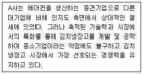
- 브랜드관리
- 데이터베이스마케팅
- 시장세분화
- 가격경쟁
(정답률: 62%)
36. 한국기업은 A제품을 생산판매하고 있다. A제품의 제품 단위당 판매가격이 9천원, 단위당 변동비가 3천원, 총 고정비가 300만원일 때 손익분기점(BEP) 판매량으로 가장 옳은 것은?
- 100개
- 250개
- 500개
- 1000개
(정답률: 57%)
37. 다음의 내용을 가장 잘 보여주는 재무정보는 무엇인가?
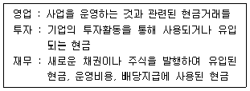
- 손익계산서
- 대차대조표
- 현금흐름표
- 결산대조표
(정답률: 64%)
38. 다음 중 브렉시트(Brexit)와 관련된 내용으로 가장 거리가 먼 것은?
- 이민정책, EU분담금 문제로 EU와 갈등
- 캐머런 총리의 EU탈퇴 국민투표
- 하원에서 EU탈퇴 국민투표 시행법안 통과
- 국민투표에서 채권단 긴축안 부결
(정답률: 63%)
39. 다음 중 실업에 대한 설명으로 가장 적절한 것은?
- 마찰적실업은 근로여건에 대한 불만족으로 직장을 그만두고 새로운 직업을 찾는 경우에 발생한다.
- 계절적실업은 경기가 나빠지거나 침체기에 빠질 때 발생하는 실업이다.
- 경기적실업은 노동의 질적인 차이 등으로 발생하는 실업이다.
- 구조적실업은 농작물 재배와 같이 매년 노동의 수요가 변화하는 경우에 발생한다.
(정답률: 64%)
40. 다음의 내용을 읽고 괄호에 들어갈 용어로 가장 적합한 것은?
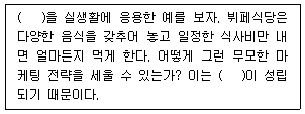
- 무차별곡선 법칙
- 총효용의 법칙
- 수요균등의 법칙
- 한계효용체감의 법칙
(정답률: 53%)
3과목: 사무영어
41. According to the below mail, which of the following is true?
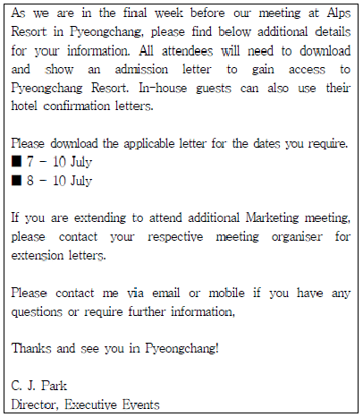
- The meeting venue is in Pyeongchang.
- All meeting attendees will receive their admission letters via express mail.
- Meeting attendees can't choose their stay according to their schedule.
- The meeting attendees who want to attend additional Marketing meeting can ask C. J. Park for their extension letters.
(정답률: 50%)
42. Choose one that does not correctly explain each other.
- Shredder - a machine that makes paper copies of pages
- Paper clip - an object that slides over papers to keep them together
- Folder - an object to store and organize papers in
- Scanner - a device that reads images and copies them into a computer
(정답률: 58%)
43. Which statement gives the most inappropriate description of an invoice?
- It is a commercial document issued by a seller to a buyer.
- It normally contains the description of items sold, their prices and quantities.
- It is regarded as the letter of credit(L/C) between the trading partners which guarantees payment for the items.
- It sometimes serves as a request for payment for the items sold.
(정답률: 38%)
44. Which element of a business letter cannot be inferred from the information on the envelope below?
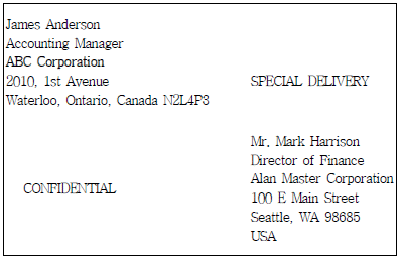
- Letterhead
- Inside Address
- Writer’s name
- Subject of Letter
(정답률: 47%)
45. Choose one that is the most appropriate subject for the following letter.
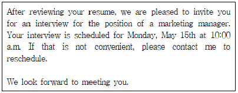
- Applying for a job
- Cancelling an interview
- Requesting an interview
- Rejecting an applicant
(정답률: 57%)
46. Which of the following is the most appropriate job title for the underlined blank ⓐ?
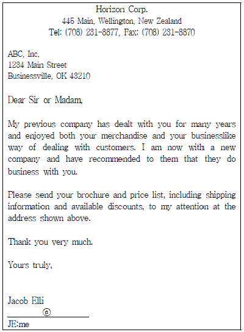
- Merchandise Manager
- Research and Development Manager
- Personnel Director
- Legal Affairs Executive
(정답률: 49%)
47. 다음은 회의에서 사용되는 용어들이다. 용어에 대한 설명이 바르지 않은 것은?
- minutes : an official record of the proceedings of a meeting, conference, convention, etc.
- agenda : one of the items to be considered in a meeting.
- quorum : the maximum number of people that a committee needs in order to carry out its business officially.
- vote : a choice made by a particular person or group in a meeting or an election.
(정답률: 42%)
48. Choose one that has the least appropriate definition for the underlined meeting and conference related words.
- Stroll is drinks and small amounts of food that are provided during a meeting.
- Place card is a piece of stiff paper or thin cardboard on which something is written or printed.
- The closing address is at the end of the conference.
- Session is a period of time that is spent doing a particular activity.
(정답률: 34%)
49. According to the following invitation, which is not true?
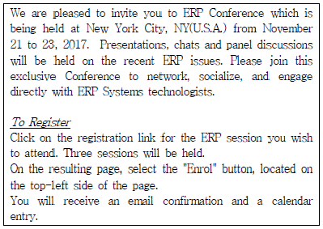
- ERP session에 참석 가능 인원이 채워지면 등록 버튼이 작동하지 않는다.
- 회의 내용은 최근 ERP 관련 사안들이다.
- 참석자들은 자신들이 원하는 ERP session에 등록가능하다.
- 이번 회의에서는 전문가들의 패널 토론도 진행될 예정이다.
(정답률: 60%)
50. Read the following conversation and choose one which is not true.
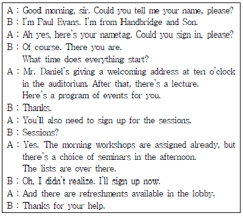
- Lobby allows attendees to have a break between events.
- The lecture will take place in the auditorium.
- Attendees will need to register one of the seminars in the afternoon.
- There is no official event in the morning.
(정답률: 48%)
51. Which one is the most appropriate for the blank?
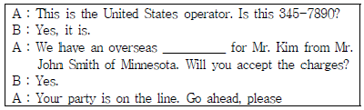
- caller identification
- extension call
- collect call
- conference call
(정답률: 46%)
52. Look at the following sales table and choose one which is not explained correctly.
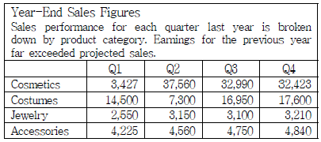
- The sales of cosmetics have reached the peak in the second quarter.
- The item whose sales picked up substantially in the third quarter compared to second one is Jewelry.
- There was no observable change in the sales of Accessories throughout the year.
- The sales figure of cosmetics has decreased slightly from the third quarter to the fourth quarter.
(정답률: 44%)
53. According to the followings, which is true?
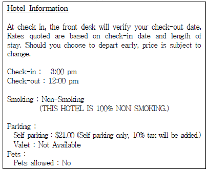
- If you check-out the hotel early in the morning, the room charge can be changed.
- Dogs & pets are allowed at the hotel.
- Valet parking service is available for the hotel guests.
- You can smoke at the hotel lobby.
(정답률: 62%)
54. Which of the following is the most appropriate expression for the blank?
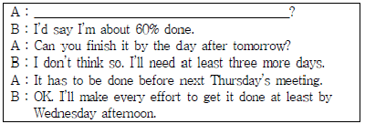
- How often do you check your manual?
- How frequently do you make each note per month?
- How far along are you with the report?
- How many times should I have to review your work?
(정답률: 55%)
55. Which of the following is the most appropriate expression for the blank?
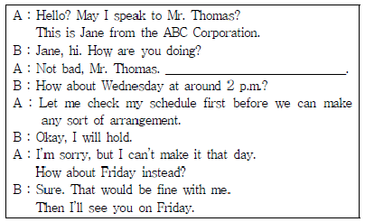
- I would like to set a date for our next meeting.
- I’m going to cancel our appointment.
- I will check my schedule again.
- What's up?
(정답률: 57%)
56. According to the following conversation, which one is true?
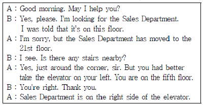
- Take the elevator to go to the Sales Department.
- Go straight down the hall and turn left.
- Sales Department is by the stairs.
- The stairs are down the end of the hall.
(정답률: 60%)
57. According to the following phone messages, which one is not true?
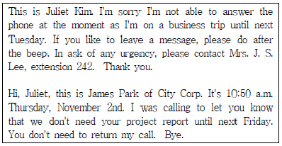
- Juliet Kim is not able to answer the phone until next Tuesday.
- James Park of City Corp. left the message on Juliet's answering machine.
- James Park left a message on Juliet's answering machine to ask for a call to him.
- Juliet asked Mrs. J. S. Lee to handle any urgency in her absence.
(정답률: 54%)
58. What is the purpose of this conversation?
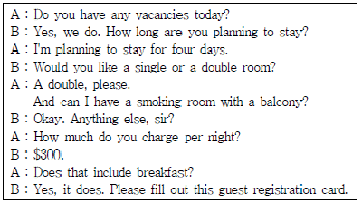
- to confirm a reservation for business trip
- to check in at a hotel
- to make an appointment with guest
- to make a reservation for a customer
(정답률: 47%)
59. Choose one which is the most appropriate expression for the blank.
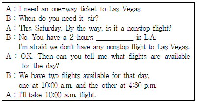
- stopover
- direct flight
- round-trip flight
- open-ended ticket
(정답률: 57%)
60. This is Mr. M. Lee's itinerary. Which one is true?
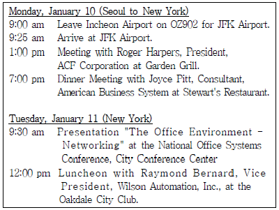
- Mr. M. Lee is going to fly to USA on OZ902.
- Mr. M. Lee will make a presentation at the City Conference Center after lunch.
- Mr. M. Lee will have a luncheon meeting at Garden Grill on January 11th.
- Mr. M. Lee will arrive at JFK airport at 9:25a.m. on January 11th Seoul time.
(정답률: 51%)
4과목: 사무정보관리
61. 아래 경우에서 설명하는 문서의 효력발생 시점에 해당하는 것은?
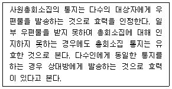
- 도달주의
- 발신주의
- 표백주의
- 요지주의
(정답률: 63%)
62. 비서들이 업무상 문서를 작성하고 있다. 문서의 성격에 맞추어 가장 적절하게 작성하는 경우는?
- 이나영 비서는 특정인을 대상으로 무료로 행사에 초대하기 위해서 안내장을 작성하였다.
- 안수아 비서는 안내장을 작성할 때에 초청장을 작성할 때 보다 예의와 격식을 갖추었다.
- 정소연 비서는 격식과 기밀을 요하는 문서가 신속하게 전달되어야 하는 경우에 이메일로 발송하였다.
- 권진서 비서는 상사의 취임안내에 대한 인사장을 보내면서 품격 있는 문장을 사용하지만 어려운 한자어 중심의 표현을 자제하였다.
(정답률: 60%)
63. 다음은 문장부호의 사용법이다. 이 사용법에 맞는 문장은?
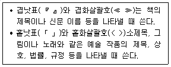
- 사무실 밖에 『해와 달』이라고 쓴 간판을 달았다.
- 《한강》은 사진집 <아름다운 땅>에 실린 작품이다.
- 이 곡은 베르디가 작곡한 「축배의 노래」이다.
- 이 그림은 피카소의 《아비뇽의 아가씨들》이다.
(정답률: 66%)
64. 다음 중 우편물 처리가 적절한 비서로만 묶인 것은?
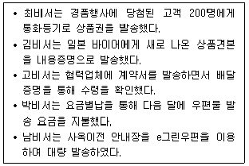
- 김비서, 박비서
- 최비서, 남비서
- 고비서, 남비서
- 최비서, 고비서
(정답률: 37%)
65. 다음 공문서 작성 방법이 올바르게 연결된 것을 모두 고른 것은?
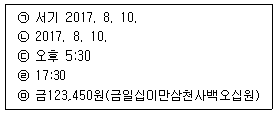
- ㉠, ㉣, ㉤
- ㉡, ㉢, ㉤
- ㉠, ㉢, ㉤
- ㉡, ㉣, ㉤
(정답률: 53%)
66. 다음 감사장의 빈 칸에 들어갈 가장 알맞은 인사말을 고르시오.
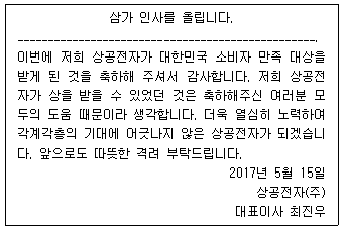
- 가만히 있어도 땀방울이 맺히는 폭염의 더위가 계속되는 나날입니다.
- 한 해의 결실을 맺는 시기에 귀사의 무궁한 발전을 기원합니다.
- 신록의 푸름이 더해 가는 계절에 귀사의 무궁한 발전을 기원합니다.
- 세상의 생명들이 결실을 맞이하는 계절에 귀사가 날로 번창하길 기원합니다.
(정답률: 60%)
67. 황비서는 상사가 미국 출장에서 가져온 명함을 정리하고 있다. 파일링 규칙에 따라서 올바른 순서대로 나열한 것은?
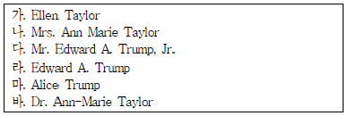
- 마 - 나 - 바 - 다 - 라 - 가
- 마 - 바 - 라 - 가 - 다 - 나
- 나 - 바 - 가 - 마 - 다 - 라
- 나 - 바 - 가 - 마 - 라 - 다
(정답률: 41%)
68. 문서의 회람에 대한 적절한 설명끼리 묶인 것은?
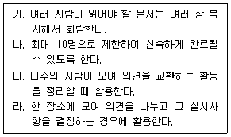
- 없다
- 가
- 가, 나
- 가, 다
(정답률: 29%)
69. SD카드(Secure Digital Card)에 대한 설명으로 가장 적절하지 않은 것은?
- 스마트폰, MP3에 주로 사용되는 손톱만한 크기의 SD카드와 디지털카메라에 주로 쓰이는 크기가 더 큰 마이크로SD카드가 있다.
- 디지털기기의 저장공간이 부족할 때 메모리슬롯에 SD카드를 장착하면 저장공간을 확장할 수 있다.
- 마이크로SD카드를 SD카드 어댑터에 꽂으면 일반SD카드를 쓰는 기기에 사용할 수 있다.
- 마이크로SD카드와 SD카드에서 클래스는 속도를 의미하며 클래스 숫자가 커질수록 속도가 빨라진다.
(정답률: 36%)
70. 아래의 기사를 통해서 알 수 있는 내용으로 가장 거리가 먼 것은?
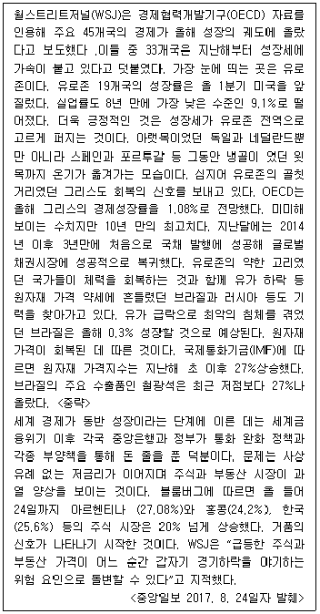
- OECD 45개 회원국의 경제가 올해 성장 궤도에 올랐다.
- 그리스는 경제가 회복되면서 국채발행에도 성공하였다.
- 브라질이 원자재 가격 상승 덕분에 경제 성장될 것으로 예상되고 있다.
- 우리나라 증시는 20% 넘는 상승으로 거품의 신호가 나타나고 있다.
(정답률: 27%)
71. 다음 중 전자문서에 관한 내용으로 가장 적절하지 않은 것은?
- 우리나라의 전자문서 국가표준과 전자문서 장기보존 국제표준은 동일하다.
- 전자 문서는 전자문서 정보 처리 시스템에 의해서 전자적 형태로 작성, 송신, 수신 또는 저장된 정보로 생성된 문서를 의미한다.
- JPG, GIF, MP3 등과 같은 디지털 콘텐츠도 전자문서의 범주에 속한다.
- 종이문서를 일반 스캐너로 이미지화한 문서는 전자문서로 서의 법적 효력을 보장받을 수 없다.
(정답률: 33%)
72. 다음 용어에 대한 설명이 올바르게 짝지어지지 않은 것은?
- 블루투스 : 휴대기기를 서로 연결해 정보를 교환하는 근거리 무선 통신 기술 표준
- IoT : Internet of Things의 약자로서 각종 사물에 센서와 통신기능을 내장하여 인터넷에 연결하는 기술
- RFID : Radio Frequency Identification의 약자로서 IC칩과 무선을 통해서 다양한 개체의 정보를 관리할 수 있는 인식 기술
- QR코드 : QR은 Quick Recognition의 약자로서 바코드보다 훨씬 많은 양을 담을 수 있는 격자무늬의 2차원 코드
(정답률: 37%)
73. 다음에서 설명하는 데이터 모델에 해당하는 것은?
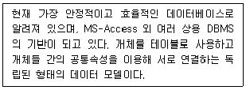
- 하나의 조직이 여러 구성원으로 이루어지는 형태의 계층형 데이터베이스
- 도로망이나 통신망 같은 네트워크형 데이터베이스
- 은행의 입출금처럼 데이터 양이 많지만 구조가 간단한 업무에 적합한 관계형 데이터베이스
- 데이터와 프로그램을 독립적인 객체의 형태로 구성한 객체지향형 데이터베이스
(정답률: 29%)
74. 다음에 설명된 개념을 의미하는 용어가 순서대로 연결된 것은?
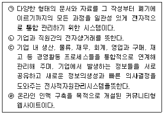
- ERP - C2B - EDI - INTRANET
- EDI - B2C - ERP - INTRANET
- EDMS - B2C - EDI - SNS
- EDMS - B2E - ERP - SNS
(정답률: 59%)
75. 아래와 같은 형태의 그래프에 사용하기에 가장 적합한 차트 제목은?
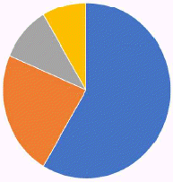
- 취업 아카데미 참석자 구성 비율
- 취업 아카데미 분기별 참석자 구성 비교
- 취업 아카데미 연도별 만족도 비교
- 취업 아카데미 참석자 수 비교와 주제별 비중 분석
(정답률: 69%)
76. 다음에 설명된 파워포인트 기능에 대한 개념이 가장 적절하게 연결된 것은?
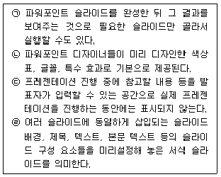
- 디자인 테마 - 슬라이드 쇼 - 슬라이드 마스터 - 슬라이드 노트
- 슬라이드 쇼 - 슬라이드 노트 - 슬라이드 유인물 - 디자인 테마
- 슬라이드 쇼 - 디자인 테마 - 슬라이드 유인물 - 슬라이드 마스터
- 슬라이드 쇼 - 디자인 테마 - 슬라이드 노트 - 슬라이드 마스터
(정답률: 68%)
77. 정보에 대한 위협은 나날이 늘어가고 있으며 허락되지 않은 접근, 수정, 노출, 훼손, 파괴 등 여러 가지 위협으로부터 정보를 지켜 나가야 한다. 정보보안의 특성으로 가장 적절하지 않은 것은?
- 허락되지 않은 사용자가 정보의 내용을 알 수 없도록 하는 기밀성 유지
- 허락되지 않은 사용자가 정보를 함부로 수정할 수 없도록 하는 무결성 유지
- 허락된 사용자가 정보에 접근하려 하고자 할 때 이것이 방해받지 않도록 하는 가용성 유지
- 허락된 사용자가 정보시스템의 성능을 최대화하기 위해 정보보안을 100%달성해야 하는 완벽성 유지
(정답률: 44%)
78. 다음은 컴퓨터 범죄에 관한 기사이다. 다음의 기사의 (A), (B), (C)에 들어갈 용어가 순서대로 표시된 것은?
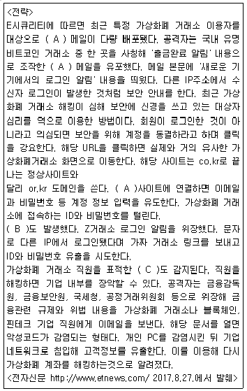
- 파밍 - 스미싱 - 피싱
- 파밍 - 스피어피싱 - 스미싱
- 피싱 - 스피어피싱 - 스미싱
- 피싱 - 스미싱 - 스피어피싱
(정답률: 47%)
79. 다음과 같이 사무기기 이용 시 발생한 문제를 해결하기 위해 노력하고 있다. 다음 중 상황에 따른 가장 적절한 행동으로 보기 어려운 것은?
- 프린터가 컴퓨터에서 제대로 인식되지 않은 경우 관련 드라이버와 프로그램을 삭제한 후 재설치한다.
- 복사기에서 경고등이 울리면서 복사가 중단되면, 복사기 덮개를 열어서 복사하려던 원본 문서를 제거한다.
- 네트워크 프린터가 작동하지 않은 경우, 메인PC 본체가 켜져 있는지 확인하고 네트워크 연결상태를 확인한다.
- 문서세단기에서 파기가 시작되다가 멈추면 역방향으로 돌려 뭉쳐있는 종이를 빼낸다.
(정답률: 51%)
80. 다음 중 성격이 같은 어플리케이션끼리 적절하게 묶인 것은?
- 조르테 - 구글캘린더 - 리멤버
- 구글 캘린더 - 어썸노트 - 캠카드
- 어썸노트 - 조르테 –구글 캘린더
- 리멤버 - 캠카드 - 조르테
(정답률: 45%)